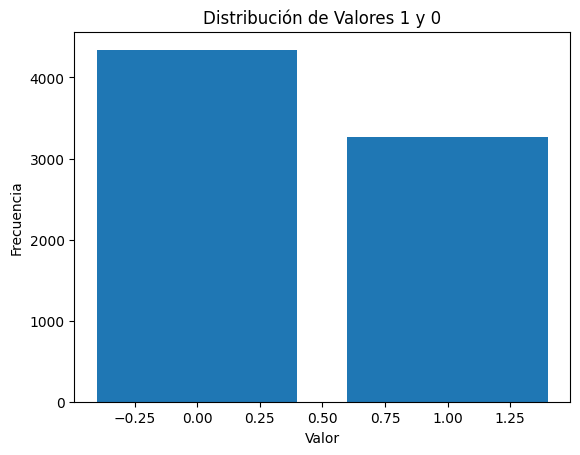
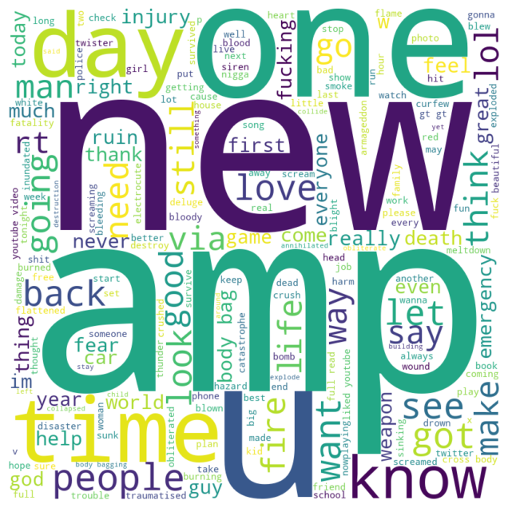
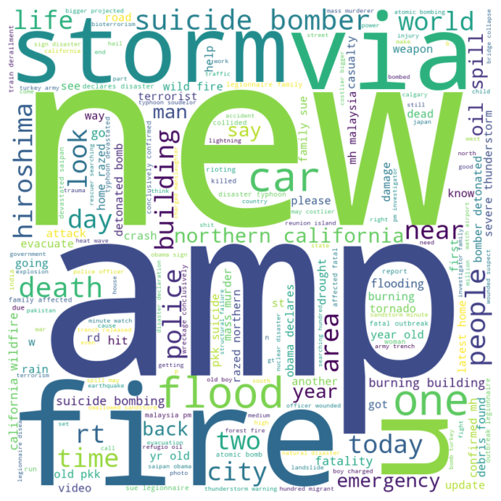
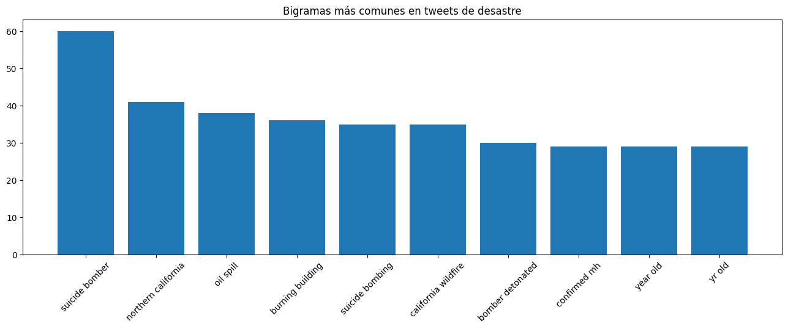
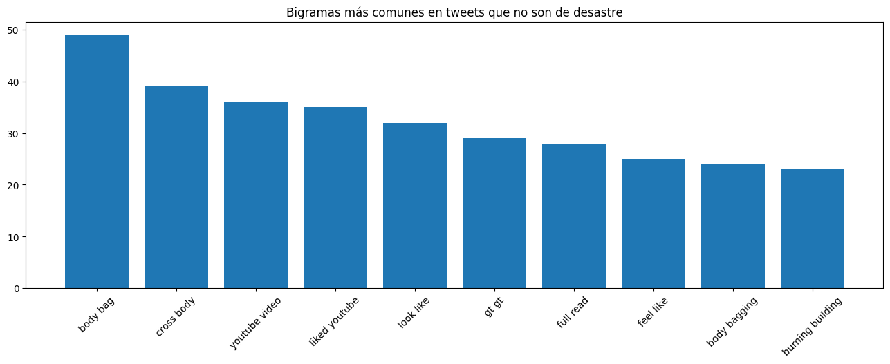
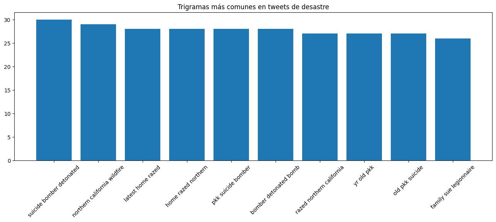
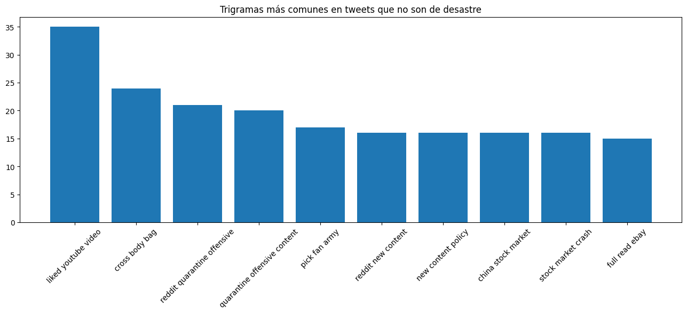

[nltk_data] Downloading package stopwords to
[nltk_data] C:\Users\Daniel\AppData\Roaming\nltk_data...
[nltk_data] Package stopwords is already up-to-date!
[nltk_data] Downloading package punkt to
[nltk_data] C:\Users\Daniel\AppData\Roaming\nltk_data...
[nltk_data] Package punkt is already up-to-date!
[nltk_data] Downloading package wordnet to
[nltk_data] C:\Users\Daniel\AppData\Roaming\nltk_data...
[nltk_data] Package wordnet is already up-to-date!
[nltk_data] Downloading package punkt to
[nltk_data] C:\Users\Daniel\AppData\Roaming\nltk_data...
[nltk_data] Package punkt is already up-to-date!
1. Limpieza y preprocesamiento
El dataset tiene los datos crudos, por lo que debemos de limpiarlos y preprocesarlos para poder trabajar con ellos. Para esto, se utilizo la libreria pandas para poder leer el archivo csv y poder trabajar con el. Luego utilizaremos varias funciones de nltk para poder limpiar los datos y dejarlos listos para poder trabajar con ellos.
Se realizaron tres acciones iniciales para limpiar y preprocesar datos. Primero se eliminó cualquier URL de los datos usando una expresión regular. También se mantuvieron solamente los caracteres que estuvieran de la a a la z, mayúsculas o minúsculas. Esto quiere decir que se quitó cualquier caracter como “#” o “@” y signos de puntuación. Por otra parte, se pasaron todas las palabras a minúsculas.
def remove_stop_words(sentence): stop_words =set(stopwords.words('english')) words = sentence.split() filtered_words = [word for word in words if word.lower() notin stop_words] new_sentence =' '.join(filtered_words)return new_sentencedata['text_clean'] = data['text'].apply(remove_stop_words)
Para que nuestro modelo tenga un mejor desempeño, quitaremos las palabras que no aportan información al modelo. Estas palabras se conocen como “stopwords”. Para esto, usaremos la librería nltk. Esta librería tiene una lista de stopwords en inglés que usaremos para quitar las palabras que no aportan información.
def lemmatize_words(words): lemmatizer = WordNetLemmatizer() lemmatized_words = [lemmatizer.lemmatize(word) for word in words]return lemmatized_wordsdata['text_lemmatized'] = data['text_clean'].apply(lambda x: lemmatize_words(x.split()))
El modelo no puede diferenciar entre correr, corriendo, correrá, etc. Para esto, usaremos un proceso llamado lemmatization. Este proceso consiste en convertir las palabras a su forma base. Por ejemplo, correr, corriendo, correrá, etc. se convertirán a correr. Esto nos ayudará a que el modelo pueda diferenciar entre palabras que tienen el mismo significado pero que están escritas de manera diferente.
2. Análisis exploratorio
data.head()
id
keyword
location
text
target
text_clean
text_lemmatized
0
1
NaN
NaN
our deeds are the reason of this earthquake m...
1
deeds reason earthquake may allah forgive us
[deed, reason, earthquake, may, allah, forgive...
1
4
NaN
NaN
forest fire near la ronge sask canada
1
forest fire near la ronge sask canada
[forest, fire, near, la, ronge, sask, canada]
2
5
NaN
NaN
all residents asked to shelter in place are ...
1
residents asked shelter place notified officer...
[resident, asked, shelter, place, notified, of...
3
6
NaN
NaN
people receive wildfires evacuation or...
1
people receive wildfires evacuation orders cal...
[people, receive, wildfire, evacuation, order,...
4
7
NaN
NaN
just got sent this photo from ruby alaska as ...
1
got sent photo ruby alaska smoke wildfires pou...
[got, sent, photo, ruby, alaska, smoke, wildfi...
# Calcular la frecuencia de valoresvalue_counts = data['target'].value_counts()# Crear el gráfico de barrasplt.bar(value_counts.index, value_counts.values)# Etiquetas y títuloplt.xlabel('Valor')plt.ylabel('Frecuencia')plt.title('Distribución de Valores 1 y 0')# Mostrar el gráficoplt.show()

Se puede observar que la cantidad de tweets de desastres y los que no son está relativamente balanceada. Hay una mayor cantidad de tweets que no son de desastres, pero no es una diferencia muy grande.
palabras_comunes = {0: None, 1: None}# Iterar a través de las etiquetas únicasfor etiqueta in data['target'].unique():# Filtrar el DataFrame por la etiqueta actual df_filtrado = data[data['target'] == etiqueta]# Unir todas las listas de palabras en una sola lista todas_las_palabras = [palabra for lista_palabras in df_filtrado['text_lemmatized'] for palabra in lista_palabras]# Contar la frecuencia de cada palabra contador = Counter(todas_las_palabras)# Obtener la palabra más común palabra_mas_comun = contador.most_common(1)[0][0]# Almacenar la palabra más común en el diccionario palabras_comunes[etiqueta] = palabra_mas_comun# Imprimir las palabras más comunes por etiquetaprint("Palabra más común para etiqueta 0:", palabras_comunes[0])print("Palabra más común para etiqueta 1:", palabras_comunes[1])
Palabra más común para etiqueta 0: like
Palabra más común para etiqueta 1: fire
Como podemos ver el dataset en la etiqueta 1 (si es un desastre) la palabra que más se repite es fire, mientas que los tweets que no son desastres la palabra que más se repite es like. Esto nos da una idea de que palabras son las que más se repiten en cada etiqueta. Es importante destacar que esto no sería posible si no se hubiesen quitado las stopwords y si no se hubiese hecho lemmatization.
def process_text(text_list):return' '.join(text_list)data_clouds = data.copy()data_clouds['processed_text'] = data_clouds['text_lemmatized'].apply(process_text)# Separar los datos según la etiquetadata_label_0 = data_clouds[data_clouds['target'] ==0]data_label_1 = data_clouds[data_clouds['target'] ==1]# Paso 2: Creación de Wordcloudsdef generate_wordcloud(text): wordcloud = WordCloud(width=800, height=800, background_color='white').generate(text) plt.figure(figsize=(8, 8)) plt.imshow(wordcloud, interpolation='bilinear') plt.axis('off') plt.show()text_label_0 =' '.join(data_label_0['processed_text'])text_label_1 =' '.join(data_label_1['processed_text'])# Generar wordclouds para cada etiquetaprint("Wordcloud para Etiqueta 0:")generate_wordcloud(text_label_0)print("Wordcloud para Etiqueta 1:")generate_wordcloud(text_label_1)
Wordcloud para Etiqueta 0:

Wordcloud para Etiqueta 1:

De las nubes de palabras se puede observar que la nube de palabras de desastres tiene varias palabras asociadas a ellos. Por ejemplo “emergency” o “police” o “fire” tienen bastante incidencia. Por otra parte, la nube de palabras de los tweets que no son de desastres tienen palabras como “like” o “get” o “one”, palabras que no tienen mucha relación con desastres.
from nltk.util import bigrams, trigramsfrom nltk.probability import FreqDistdisaster_tokens = [word for word_list in data[data['target'] ==1]['text_lemmatized'] for word in word_list]non_disaster_tokens = [word for word_list in data[data['target'] ==0]['text_lemmatized'] for word in word_list]disaster_bigrams =list(bigrams(disaster_tokens))disaster_trigrams =list(trigrams(disaster_tokens))non_disaster_bigrams =list(bigrams(non_disaster_tokens))non_disaster_trigrams =list(trigrams(non_disaster_tokens))disaster_bigram_freq = FreqDist(disaster_bigrams)non_disaster_bigram_freq = FreqDist(non_disaster_bigrams)disaster_trigram_freq = FreqDist(disaster_trigrams)non_disaster_trigram_freq = FreqDist(non_disaster_trigrams)def plot_most_common_bigrams(freq_dist, title): bigrams, frequencies =zip(*freq_dist.most_common(10)) bigrams_str = [' '.join(bigram) for bigram in bigrams] # Convertir bigramas a cadenas para la visualización plt.figure(figsize=(16, 5)) plt.bar(bigrams_str, frequencies) plt.title(title) plt.xticks(rotation=45) plt.show()plot_most_common_bigrams(disaster_bigram_freq, 'Bigramas más comunes en tweets de desastre')plot_most_common_bigrams(non_disaster_bigram_freq, 'Bigramas más comunes en tweets que no son de desastre')plot_most_common_bigrams(disaster_trigram_freq, 'Trigramas más comunes en tweets de desastre')plot_most_common_bigrams(non_disaster_trigram_freq, 'Trigramas más comunes en tweets que no son de desastre')




Como podemos ver en los bigramas o trigramas para los desastres lo más común habla respecto a incedios, bombardero suicida, gente de avanzada edad y derrame de aciete
Mientras que los que no son desastre hablan de gustos
Modelo NLP
from sklearn.feature_extraction.text import TfidfVectorizerfrom sklearn.linear_model import LogisticRegressionfrom sklearn.model_selection import train_test_splitfrom sklearn.metrics import accuracy_score# Dividir el conjunto de datos en entrenamiento y pruebaX_train, X_test, y_train, y_test = train_test_split(data['text_lemmatized'].apply(process_text), data['target'], test_size=0.3, random_state=42)# Vectorizar los tweets usando TF-IDFtfidf_vectorizer = TfidfVectorizer(max_features=5000)X_train_tfidf = tfidf_vectorizer.fit_transform(X_train)X_test_tfidf = tfidf_vectorizer.transform(X_test)# Entrenar un modelo de Regresión Logísticaclf = LogisticRegression(max_iter=1000)clf.fit(X_train_tfidf, y_train)# Evaluar la precisión del modelo en el conjunto de pruebaaccuracy = accuracy_score(y_test, clf.predict(X_test_tfidf))print(f"El modelo obtuvo una precisión de: {accuracy}")
El modelo obtuvo una precisión de: 0.8095446584938704
Tras toda la limpieza obtuvimos un modelo con un precisión de 0.81 lo cual es un resultado bastante bueno para un modelo que debe procesar y analizar lenguaje natural.
from sklearn.feature_extraction.text import TfidfVectorizervectorizer = TfidfVectorizer(max_features=5000) # Puedes ajustar el número de característicasX_train_vec = vectorizer.fit_transform(X_train)X_test_vec = vectorizer.transform(X_test)
from sklearn.naive_bayes import MultinomialNBnaive_bayes_classifier = MultinomialNB()naive_bayes_classifier.fit(X_train_vec, y_train)
MultinomialNB()
In a Jupyter environment, please rerun this cell to show the HTML representation or trust the notebook. On GitHub, the HTML representation is unable to render, please try loading this page with nbviewer.org.